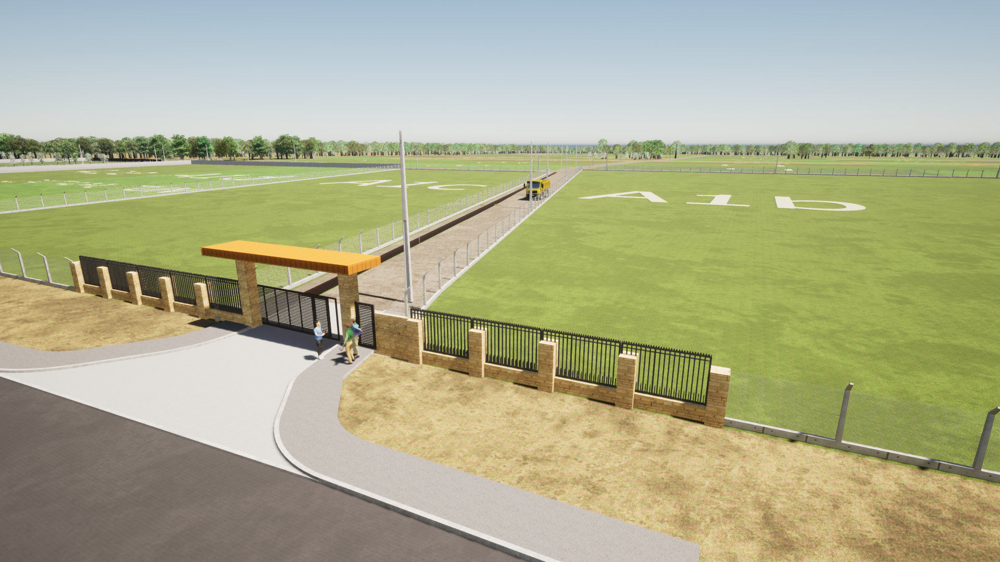
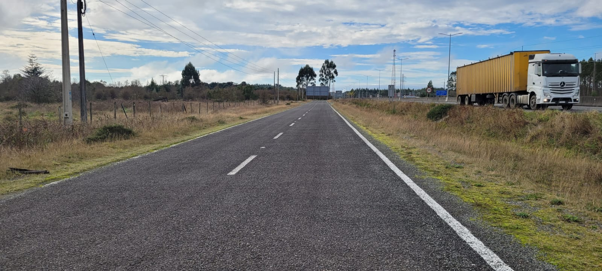

Proyecto El Empalme
Ochenta y una parcelas industriales a orillas de la Ruta 5 Sur, en el sector El Empalme, a unos 54 km de Puerto Montt camino a Pargua y Chiloé. Dos tamaños: 5.000 y 10.000 m². Caminos de 10 m y cunetas de drenaje ejecutados; electrificación trifásica con factibilidad Saesa y agua por pozo profundo en proyecto. Cada parcela con su rol del SII.
Plano de subdivisión
Directorio de lotes
| Lote | Superficie | Frente | Fondo | UF / m² | Total UF | Total CLP | Estado | |
|---|---|---|---|---|---|---|---|---|
| 01 | 1.350 m² | 30,0 m | 45,0 m | 0,98 | 1.323 | $50.935.500 | Disponible | |
Notas técnicas
Antecedentes
|
||||||||
| 02 | 1.350 m² | 30,0 m | 45,0 m | 0,98 | 1.323 | $50.935.500 | Reservado | |
Estado de reserva
Antecedentes
|
||||||||
| 03 | 1.575 m² | 35,0 m | 45,0 m | 0,95 | 1.496 | $57.596.000 | Disponible | |
Notas técnicas
Antecedentes
|
||||||||
| 04 | 2.250 m² | 50,0 m | 45,0 m | 0,92 | 2.070 | $79.695.000 | Vendido | |
Operación cerrada
|
||||||||
| 05 | 2.475 m² | 55,0 m | 45,0 m | 0,88 | 2.178 | $83.853.000 | Disponible | |
Notas técnicas
Antecedentes
|
||||||||
| 06 | 2.250 m² | 50,0 m | 45,0 m | 0,92 | 2.070 | $79.695.000 | Disponible | |
Notas técnicas
Antecedentes
|
||||||||
| 07 | 1.800 m² | 40,0 m | 45,0 m | 0,93 | 1.674 | $64.449.000 | Disponible | |
Notas técnicas
|
||||||||
| 08 | 1.575 m² | 35,0 m | 45,0 m | 0,95 | 1.496 | $57.596.000 | Reservado | |
Estado de reserva
|
||||||||
| 09 | 2.025 m² | 45,0 m | 45,0 m | 0,91 | 1.843 | $70.955.500 | Disponible | |
Notas técnicas
|
||||||||
| 10 | 1.350 m² | 30,0 m | 45,0 m | 0,98 | 1.323 | $50.935.500 | Disponible | |
Notas técnicas
|
||||||||
Precios vigentes a mayo 2026, expresados en UF según valor del día de escrituración. Valores en pesos son referenciales. Cabida final sujeta a levantamiento topográfico de cierre.
El Empalme proyectado
Lo que hoy comienza a trazarse en el plano maestro representa la visión de desarrollo proyectada para el futuro del parque industrial. Los renders oficiales muestran la imagen objetivo del proyecto una vez consolidado: una propuesta moderna, funcional y pensada para responder a las necesidades de empresas, logística e industria.
La proyección contempla un acceso principal con pórtico en acero corten, diseñado para entregar identidad, presencia y una imagen corporativa acorde al estándar que se busca alcanzar. Asimismo, se considera un cierre perimetral sobre postes de hormigón y una urbanización integral del proyecto, elementos que forman parte de la planificación general de desarrollo del parque.
Estas imágenes no corresponden a una recreación comercial sin fundamento, sino a la visión arquitectónica y urbanística que se pretende materializar progresivamente en el tiempo. El avance de estas obras estará directamente vinculado al crecimiento del proyecto y al proceso de comercialización de los lotes, permitiendo generar los recursos necesarios para continuar ejecutando cada una de las etapas planificadas.
Más que una simple venta de terrenos, este proyecto busca consolidar un espacio industrial con proyección, infraestructura y una imagen de alto estándar, pensado para crecer de manera sostenible junto a quienes formen parte de su desarrollo desde las primeras etapas.

El Empalme hoy
A diferencia de los renders proyectados, las siguientes imágenes corresponden al estado real del predio a la fecha: un registro fotográfico en terreno de lo que ya está ejecutado y operativo, sin montajes ni recreaciones.
Los caminos interiores ya están construidos en ripio compactado, con 10 m de ancho y las cinco uniones que conectan las distintas secciones de la parcelación. A lo largo de ellos se ejecutaron las cunetas de drenaje, que encauzan las aguas lluvia y mantienen la rasante transitable durante todo el año.
El predio cuenta con cierre perimetral sobre postes y un portón de acceso ya instalado, y conecta de forma directa con la caletera asfaltada de la Ruta 5 Sur, lo que permite el ingreso de vehículos pesados desde la carretera. La franja forestal existente delimita el contorno del proyecto.

Infraestructura y obras
- Caminos interiores
- Caminos de 10 m de ancho con cinco uniones que interconectan los distintos puntos de la parcelación. Cuneta de drenaje de 1,5 m de ancho por 2 m de profundidad. Ejecutado
- Accesos
- Dos accesos amplios conectados a la caletera de asfalto de la Ruta 5 Sur. Se proyecta pavimentar 20 m de asfalto en cada ingreso para unirlos a la caletera, cada uno con portones metálicos. Asfalto y portones por ejecutar
- Electricidad
- A la fecha sin suministro. El proyecto contempla postación y red trifásica; la factibilidad fue aprobada por Saesa, distribuidora de la zona. Su ejecución avanza junto al desarrollo del proyecto. Proyectado · factibilidad Saesa
- Agua
- A la fecha sin suministro. Por tratarse de sector rural, el abastecimiento será por pozo profundo, dejando cada parcela con su arranque de agua. Se ejecuta a continuación de la electrificación. Proyectado
- Rol SII
- Cada parcela cuenta con su rol individual aprobado por el Servicio de Impuestos Internos. Aprobado
- Uso de suelo
- Parcelación de carácter industrial, en sector rural de la Región de Los Lagos. Industrial
Ubicación y conectividad
- Puerto Montt centro 54 km ~40 min
- Aeropuerto El Tepual 19 km 22 min
- Puerto de Pargua (embarque Chiloé) 47 km 38 min
- Castro (vía transbordo) 137 km 2 h 40 min
- Osorno 109 km 1 h 12 min
- Cruce de Calbuco (acceso) 0,8 km por caletera

Documentos vigentes
- D-01 Plano de subdivisión aprobado SEREMI Minvu Los Lagos
- D-02 Certificado de informaciones previas, Municipalidad de Puerto Montt
- D-03 Roles individuales aprobados por el SII (uno por parcela)
- D-04 Factibilidad eléctrica aprobada por Saesa
- D-05 Proyecto de electrificación trifásica y de agua por pozo profundo
- D-06 Modelo de instrucciones notariales y custodia de vale vista
Contacto comercial
Visitas a terreno con cita previa. El pago se realiza por vale vista a nombre de la propietaria, que queda en custodia con instrucciones en notaría hasta que la propiedad se inscribe en el Conservador a nombre del comprador.
- Corredor responsable
- Oficina de Corretaje El Empalme
- Teléfono
- +56 9 0000 0000
- Correo
- contacto@elempalme.cl
- Forma de pago
- Vale vista en custodia notarial, liberado al inscribir en el Conservador
- Empresas en el frente
- Copec y Catamutún (parcelas A-1)